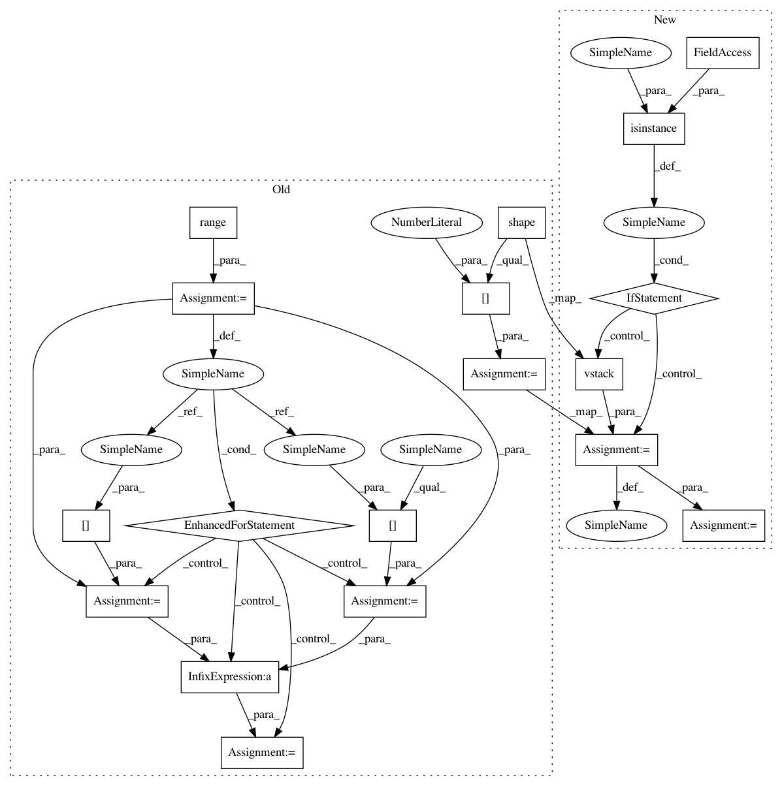

e4eaec6cbd34c7abc59fcf29a95dab3c9f2810b8,geomstats/riemannian_metric.py,RiemannianMetric,variance,#RiemannianMetric#Any#Any#Any#,190
Before Change
weights = gs.ones(n_points)
weights = gs.array(weights)
n_weights = gs.shape(weights)[0]
assert n_points == n_weights
sum_weights = gs.sum(weights)
if base_point is None:
base_point = self.mean(points, weights)
variance = 0
for i in range(n_points):
weight_i = weights[i]
point_i = points[i]
sq_dist = self.squared_dist(base_point, point_i)
variance += weight_i * sq_dist
variance /= sum_weights
return variance
After Change
n_points = gs.shape(points)[0]
assert n_points > 0
if isinstance(weights, list):
weights = gs.vstack(weights)
if weights is None:
weights = gs.ones(n_points)
weights = gs.array(weights)
//n_weights = gs.shape(weights)[0]
sum_weights = gs.sum(weights)
if base_point is None:
base_point = self.mean(points, weights)
variance = 0.
sq_dists = self.squared_dist(base_point, points)
variance += gs.einsum("n,nj->nj", weights, sq_dists)
//for i in range(n_points):
// weight_i = weights[i]
In pattern: SUPERPATTERN
Frequency: 4
Non-data size: 18
Instances
Project Name: geomstats/geomstats
Commit Name: e4eaec6cbd34c7abc59fcf29a95dab3c9f2810b8
Time: 2018-09-12
Author: ninamio78@gmail.com
File Name: geomstats/riemannian_metric.py
Class Name: RiemannianMetric
Method Name: variance
Project Name: geomstats/geomstats
Commit Name: e4eaec6cbd34c7abc59fcf29a95dab3c9f2810b8
Time: 2018-09-12
Author: ninamio78@gmail.com
File Name: geomstats/riemannian_metric.py
Class Name: RiemannianMetric
Method Name: mean
Project Name: geomstats/geomstats
Commit Name: 57b3d54234cda1decf80764f856ab255b8d13c1d
Time: 2018-09-14
Author: ninamio78@gmail.com
File Name: geomstats/riemannian_metric.py
Class Name: RiemannianMetric
Method Name: mean
Project Name: geomstats/geomstats
Commit Name: 57b3d54234cda1decf80764f856ab255b8d13c1d
Time: 2018-09-14
Author: ninamio78@gmail.com
File Name: geomstats/riemannian_metric.py
Class Name: RiemannianMetric
Method Name: variance
Project Name: geomstats/geomstats
Commit Name: e4eaec6cbd34c7abc59fcf29a95dab3c9f2810b8
Time: 2018-09-12
Author: ninamio78@gmail.com
File Name: geomstats/riemannian_metric.py
Class Name: RiemannianMetric
Method Name: variance